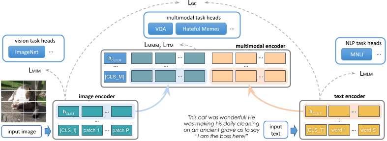
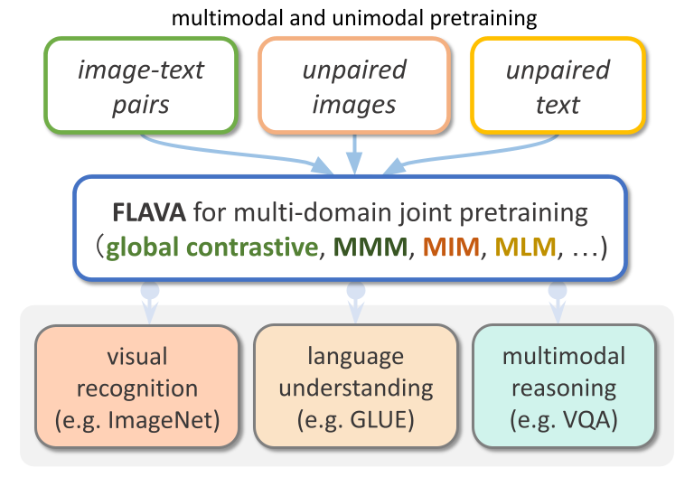
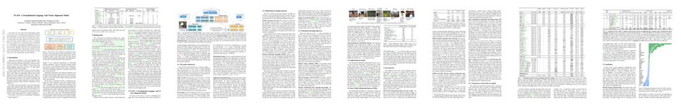

FLAVA: A Foundation Language And Vision Alignment Model
| Facebook AI Research |
|
| * Equal Contribution |
|
CVPR 2022

State-of-the-art vision and vision-and-language models rely on large-scale visio-linguistic pretraining for obtaining
good performance on a variety of downstream tasks. Generally, such models are often either cross-modal (contrastive) or
multi-modal (with earlier fusion) but not both; and they often only target specific modalities or tasks. A promising
direction would be to use a single holistic universal model, as a "foundation", that targets all modalities at once -- a
true vision and language foundation model should be good at vision tasks, language tasks, and cross- and multi-modal
vision and language tasks. We introduce FLAVA as such a model and demonstrate impressive performance on a wide range of
35 tasks spanning these target modalities.
FLAVA Model
FLAVA, a language and vision alignment model
learns strong representations from multimodal (imagetext pairs) and unimodal data (unpaired images and text)
and can
be applied to target a broad scope of tasks from three domains
(visual recognition, language understanding, and multimodal reasoning) under a common transformer model architecture.

Source Code
Paper and Bibtex

[Paper]
[ArXiv]
[Bibtex]
@inproceedings{singh2022flava,
author = {
Amanpreet Singh and
Ronghang Hu and
Vedanuj Goswami and
Guillaume Couairon and
Wojciech Galuba and
Marcus Rohrbach and
Douwe Kiela
},
title = {
{FLAVA:} {A} Foundational Language And
Vision Alignment Model
},
booktitle={CVPR},
year={2022}
}
|
Acknowledgements
We thank Devi Parikh for her support and advice on this
project. We are grateful to Dmytro Okhonko, Hu Xu, Armen Aghajanyan, Po-Yao Huang, Min Xu, and Aleksandra Piktus for
joint explorations of multimodal data. We
thank Ning Zhang, Madian Khabsa, Sasha Sheng, and Naman Goyal for useful technical discussions; Karan Desai
for providing access to RedCaps; Vaibhav Singh and others on the Google TPU team for help running experiments
on TPUs; Shubho Sengupta, Armand Joulin, Brian O’Horo,
Arthur Menezes for compute and storage support; and Ryan
Jiang, Kushal Tirumala and Russ Howes for help running
experiments.
|